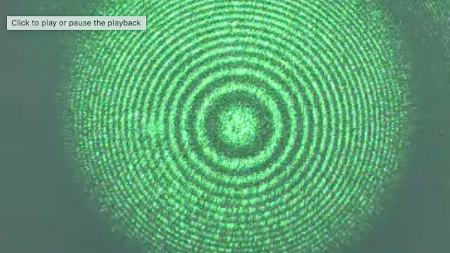
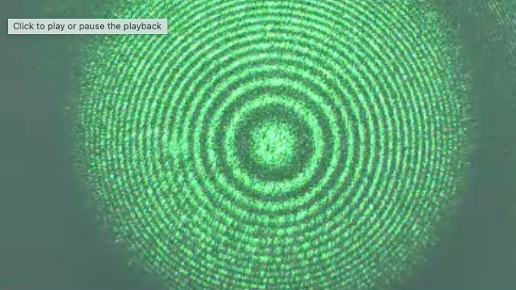

This page was generated from `/home/lectures/exp3/source/notebooks/L10/FabryPerot.ipynb`_.

Fabry Perot Interferometer¶
We will now have a look at some applications of the multiwave interference also with changing amplitude. One of the is the Fabry-Perot interferometer, which essentially consists of two mirrors, which are brought to a distance \(d\) as shown below.

Fig.: Simplified Sketch of a Fabry-Perot Interferometer.
If light enters the Fabry Perot interferometer with an amplitude \(A_0\). It is transmitted with a reduced amplitude. The initial amplitude has to be multiplied with the transmission factor \(t_1\). It travels further until it hits the sescond mirror, where it is reflected and transmitted as well. The reduced amplitude due to reflection is expressed by \(r_2\), while the transmission is introducing another factor \(t_2\). This means that the first transmitted wave has the amplitude
The second transmitted wave now has a decreased amplitude as compared to the first one and reads
We could now continue like that, but we see already at this point the similarity to the multiwave interference with decreasing amplitude we have talked about in the last lecture. We would observe interference of all transmitted waves
We just have to insert the corresponding expression, i.e. \(\sqrt{I_0}=A_0 t_1 t_2\) and \(h=r_1r_2e^{i\phi}\) or \(r=r_1 r_2\). We may even insert the phase shift
which is calculated from the path length difference \(\Delta s\). Note that this path length difference between neighboring partial waves is \(\Delta s=2\Delta s_1-\Delta s_2=2d\cos(\theta)\).
Our final formula would thus look like
and gives now the intensity as calculated during the last lecture.
|
|---|
Fig.: Fabry Perot Interferometer. |

Yet, we know now that \(r=r_1 r_2\) is the factor by which the amplitude decreases, which also enters the Finesse
The better the reflectivity of the mirrors (which means \(r\rightarrow 1\)), the higher is the Finess and the sharper are the interference peaks observed in the Fabry-Perot interferometer.
Let us discuss the form of the interference peeks and the distance a bit more in detail. We have plotted so far the intensity as a function of the phase angle \(\phi\). This phase angle is given by
We would like to have a look at the transmission in the case of normal incidence \(\theta=0\), so that \(\phi=4\pi d/\lambda\). To obtain constructive interference in transmission, the phase angle needs to be an integer multiple of \(2\pi\), i.e. \(\phi=m 2\pi\) (\(m=1,2,\ldots\)). This means that for a given thickness \(d\) and a specific integer value \(m\), the transmission is maximum for
We may then calculate the distance of the constructive interference maxima for neighboring values of the interference order \(m\). A quick calculation gives
We may also do the calculation in the frequency space. A wavelength \(\lambda_m\) corresponds via the relation \(\nu=c/\lambda\) to \(\nu_m=\frac{c\, m}{2d}\). The difference between neighboring frequencies is then
This quantity \(\delta \nu\) or \(\delta \lambda\) is called free spectral range as it indicates the “space” we have until the next frequency delivers a constructive interference maximum for the next integer \(m\). In this range, we would like to resolve two different frequencies. So let us assume we would like to resolve two frequencies \(\nu_a\) and \(\nu_b\) with the same order of the interference \(m\), then we have to find a criterium, that tells us, that we can still seperate the two frequencies. We use as a measure the width of the individual peaks. We measure the width as the full width at half maximum (FWHM), this means, we look for the phase angle \(\phi_{1/2}\) at which we have \(I/I_{\rm max}=1/2\), i.e.
using the small angle approximation \(\sin(\phi)\approx\phi\).This results in an angle \(\phi_{1/2}= \frac{\pi}{\mathcal{F}}\) for the half width. The full width is thus twice this values, i.e. \(2\frac{\pi}{\mathcal{F}}\). This full width corresponds also to a width in frequency space \(\Delta \nu\), which with our conversion formula \(\phi=4\pi\nu d/c\) yields
This actually directly gives a definition for the Finesse.
This means that the Finesse gives us a measure for the spectral resolution of a Fabry-Perot-Interferometer. It tells us by how much the free spectral range $:nbsphinx-math:delta `:nbsphinx-math:nu $ is bigger than the width :math:Delta nu` of the interference maximum. More generally this is measured by the resolving power \(\mathcal{R}\), which is given for the Fabry-Perot-Interferometer
where \(m\) is again the interference order \(m\), we defined above.
|
|---|
Fig.: Two different wavelength interfereing constructively in a Fabry Perot interferometer. |

A specific intensity pattern is obtained when inserting a Fabry Perot interferometer in a lens system and using an extended monochromatic light source as sketched below.

Fig.: Fabry Perot Interferometer and interferebnce pattern observed in the lecture.
In this case the interference pattern is a ring structure whgich gets denser with increasing radius as shown in the lecture (see below).
 

Fig.: Fabry Perot Interferometer and interferebnce pattern observed in the lecture.
Newton Rings¶
A similar interference pattern is also observed in the case of a hemi-spherical surface touching a planar surface as sketched in the image below.

Fig.: Newton Rings. Interference of waves from a spherical and a planar surface in close contact.
If light in incident normal to the top surface, light is reflected at several surfaces. The ones we are interested in are the spherical surface and the planar surface below. The vertical distance between those points is \(d\), yet refraction will deflect the beam slightly so that the actual path is a bit longer. If we are close to the axis of the spherical surface (\(r\ll R\)), where \(R\) is the radius of the spherical surface. We can neglect refraction.
Under these conditions the path length difference between a wave reflected at the curved and the planar surface is
Note that the additional \(\lambda/2\) comes from the phase jump when reflecting on the planer boundary, as we there have a reflection on an optically denser material.
Having the path length difference we can now calculate the condition for destructive interference, i.e.
where \(m\) is an integer. We may express further the distance \(d\) as a function of the distance \(r\) from the contact point of the spherical surface with the plane surface. This can be calculated from
with \(R\) as the radius of the spherical surface, which we can further simplify to
for \(d\ll R\) from which
follows. We may therefore calculate the radius \(r_m\) where destructive interference is observed by inserting this distance in the above interference condition. We obtain
The radius of the interference fringes is thus characteristic for a certain wavelength and radius and increases with the square root of the integer \(m\).

Fig.: Observation of Newton Rings using white light in the lecture.
Such patterns can be used to calculate the wavelength of light if the radius of the spherical surface is known.